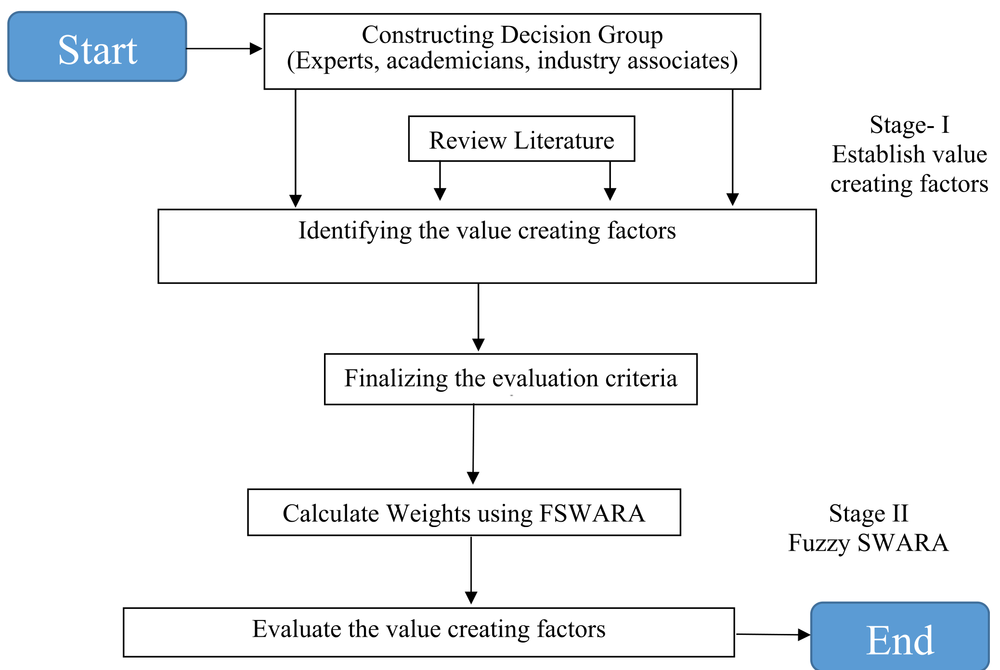

图源：Li et al. (2026)
图源：Li et al. (2026)亚欧绿色航运走廊的燃料转型
从政策执行、燃料成本到船舶与港口工程约束，解读分阶段燃料转型。
 Abyssal Mind
图源：Li et al. (2026)
Abyssal Mind
图源：Li et al. (2026)从政策执行、燃料成本到船舶与港口工程约束，解读分阶段燃料转型。

绿氨的成本优势是否经得起 N₂O 排放、后处理和能源价格的检验？

用空间—电量网络与 Benders 分解，重审电动汽车充电站布局。

从环境、经济贸易与社会因素理解绿色航运走廊的长期价值。

这份自愿联合声明为绿色航运走廊提供跨国行动框架，并将燃料、港口、船队和基础设施协作放入同一政策议程。
阅读政策解读 →